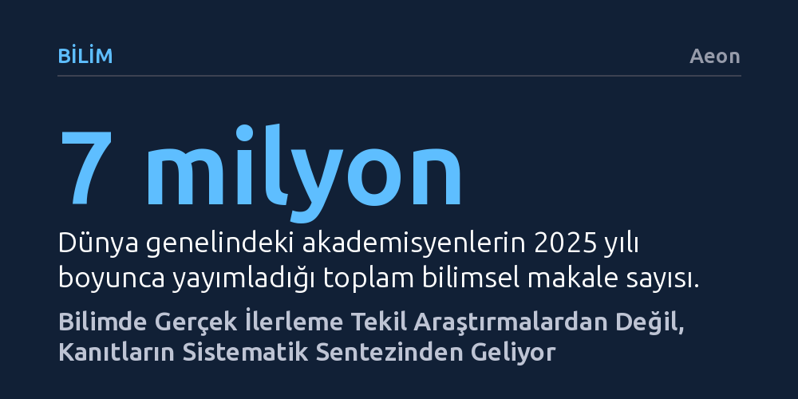

BILIM · Aeon · 2026-10-07
Medyada parlayan tekil araştırmalar yanıltıcı sonuçlar üretirken, mevcut verileri meta-analiz ve sistematik derlemelerle birleştirmek hayat kurtaran gerçek kanıtı ortaya çıkarıyor. İnsanlığın karmaşık sorunları çözmek için yeni yayınlara değil, eldeki devasa bilgiyi titizlikle sentezlemeye ihtiyacı var.
Gündemdeki sansasyonel bilimsel haberlere temkinli yaklaşmanızı; güvenilir bilginin tek bir çalışmada değil, yüzlerce araştırmanın bir araya getirildiği tarafsız sentezlerde yattığını fark ettirir.

Bilim ve sağlık haberlerini takip eden herkes o tanıdık çelişkiyi bilir: Bir hafta kahvenin ömrü uzattığı iddia edilirken ertesi hafta kalbe zararlı olduğu söylenir. Benzer bir durum 2025 sonbaharında yaşandı; Amerikan İlaç Dairesi (FDA), hamilelikte parasetamol kullanımının çocukta otizm riskini artırdığı yönünde bir uyarı yayımladı ve bu duyuru küresel basında hızla yankı buldu. Oysa sağlık otoriteleri yalnızca işlerine gelen birkaç araştırmayı cımbızlamış, daha sağlam metodolojiye sahip kapsamlı çalışmaları görmezden gelmişti. Birkaç ay sonra yayımlanan geniş çaplı bir kanıt derlemesi, gebelikteki parasetamol kullanımı ile otizm arasında net bir bağ bulunmadığını ortaya koydu; ancak o zamana dek sayısız anne adayı en güvenli ağrı kesicilerden biri hakkında boş yere paniğe sürüklenmişti.
Bu kafa karışıklığının kökeninde bireysel araştırmaların tek başlarına mutlak doğru gibi sunulması yatıyor. Yalnızca 2025 yılında dünya genelinde 7 milyondan fazla akademik makale yayımlandı; bu da günde 19 binden fazla yeni çalışma demek. Akademisyenler kariyer basamaklarını tırmanmak için aralıksız makale basmak, gazeteciler ise internette tık alabilmek için sansasyonel manşetlerin peşinden koşmak zorunda kalıyor. Ortaya saçılan bu devasa bilgi akışında titiz deneyler ile özensiz çalışmalar birbirine karışıyor. İhtiyacımız olan asıl emek ise yeni bir çalışma daha üretmekten ziyade, insanlığın zaten bildiği şeyleri bir araya toplayıp anlamlandırma sürecinde yatıyor.
Dağınık bilimsel verileri birleştirme arayışı, 1976 yılında istatistikçi Gene Glass'ın geliştirdiği devrim niteliğindeki teknikle başladı. Kendi psikoterapi sürecinin faydasını gören Glass, akademideki yaygın kanının terapinin işe yaramaz olduğu yönündeki iddiasını sorguladı. O dönemde araştırmacılar literatürü tararken sadece 'çalışma sayma' yöntemini kullanıyordu; yani tedavinin işe yaradığını söyleyen çalışmalarla yaramadığını söyleyenlerin sayısı teraziye konuyor, çok oy alan taraf kazanıyordu. Ancak bu yöntem araştırmalardaki etki büyüklüğünü ve niteliği tamamen göz ardı ediyordu.
Glass ve eşi Mary Lee Smith, 370'ten fazla araştırmayı toplayarak her birinin bulgusunu ortak bir 'etki büyüklüğü' metriğine dönüştürdü ve sonuçların ortalamasını aldı. Farklı para birimlerini ortak bir kura çevirmeye benzeyen bu istatistiksel yönteme 'meta-analiz' adı verildi. Bu keşif, tüm küresel literatürün tarafsız kriterlerle taranıp ayıklandığı 'sistematik derleme' yaklaşımının doğuşunu tetikledi. Bilim dünyası böylece tek tek ağaçlara takılıp kalmak yerine nihayet ormanın bütününü görebileceği bir araca kavuştu.
Kanıt sentezi en çarpıcı dönüşümü tıp alanında yarattı. 1991 yılında İngiliz doktor Iain Chalmers, tıp dünyasındaki kararların araştırma kanıtlarından ziyade kıdemli hekimlerin kişisel alışkanlıklarına dayandığını fark etti. 1993'te kurulan Cochrane İşbirliği, sağlık müdahalelerinin etkinliğini tarafsızca sınayan sistematik derlemelerin küresel kalesi haline geldi. Bugün modern ameliyat tekniklerinden doğum uygulamalarına kadar sayısız klinik kılavuz, farkında bile olmadan yararlandığımız bu görünmez kanıt tabanına dayanıyor.
Bilimsel verileri zamanında sentezlememenin faturası ise çoğu zaman insan hayatıyla ödeniyor. 20. yüzyılın ortalarında ünlü çocuk doktoru Benjamin Spock'ın bebekleri sırtüstü yerine yüzüstü yatırma tavsiyesi milyonlarca aileye ulaştı ve bu durum Ani Bebek Ölümü Sendromu (SIDS) vakalarında feci bir artışa yol açtı. Yıllar sonra yapılan geriye dönük bir meta-analiz, mevcut araştırmalar vaktinde sentezlenmiş olsaydı bu tehlikenin 1970 yılında fark edileceğini ve en az 50 bin bebeğin ölümünün engellenebileceğini gösterdi.
Bu yöntem bugün tıbbın çok ötesine uzanıyor. İngiltere'de okul yöneticilerinin yüzde 70'i bütçe harcamalarını yaparken sistematik derlemelere dayanan eğitim rehberlerini kullanıyor; örneğin öğrencilere 'öğrenmeyi öğrenme' becerisi kazandırmanın bir yılda sekiz aylık ek akademik ilerleme sağladığı bu sayede biliniyor. İklim krizinde IPCC raporları ve biyoçeşitliliği koruma projeleri de artık politikalarını tekil araştırmalara değil, geniş kanıt havuzlarına dayandırarak şekillendiriyor.
Sistematik derlemelerin tartışılan yönleri de var. Klasik modeller ağırlıklı olarak sayısal verilere odaklandığından, yerel toplulukların deneyimleri veya mülakatlar gibi niteliksel bilgileri dışarıda bırakabiliyor. Ancak günümüzde nesli tükenmekte olan türlerin korunmasında hem yerli halkların gözlemlerini hem de sayısal verileri birleştiren karma sentezler ve karar alıcılara hızla bilgi sunan 'hızlı derlemeler' geliştiriliyor.
En büyük açmazlardan biri ise zaman: Titiz bir derlemenin tamamlanması ortalama üç yıl sürüyor. Günümüzde üretken yapay zekânın literatürü tarama ve filtreleme işlerini otomatikleştirerek süreci hızlandırması hedeflense de hatalı sentezler ve uydurma kaynak riskleri endişe yaratıyor. Yine de asıl sorumluluk zihniyetimizde yatıyor: İnsanlığın devasa sorunlarını çözecek bilgi zaten kütüphanelerde mevcut; tek yapmamız gereken yeni ve parıltılı çalışmaların büyüsüne kapılmak yerine eldeki bilgi birikimini titizlikle bir araya getirmek.